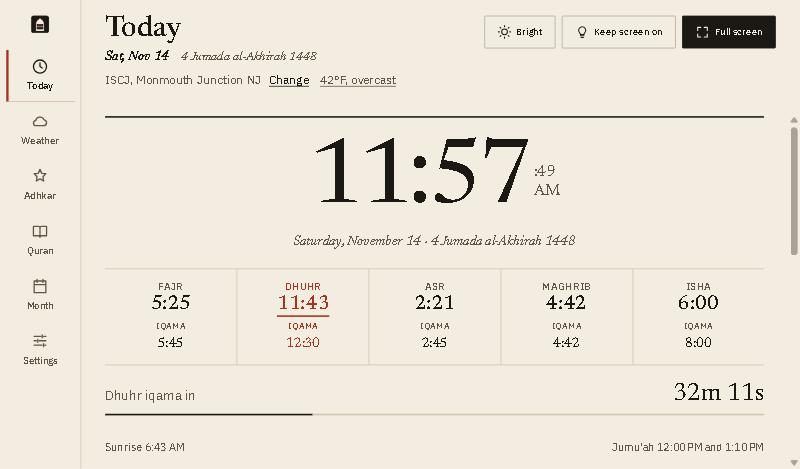
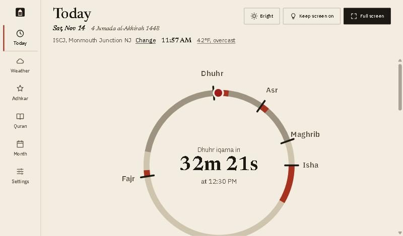
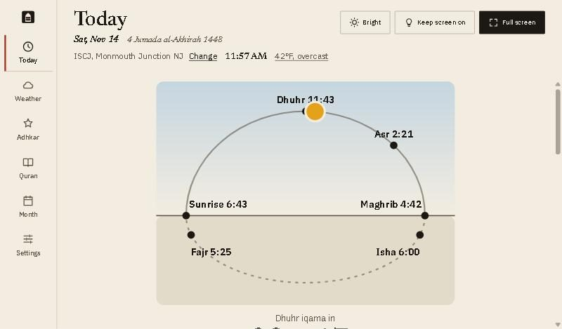
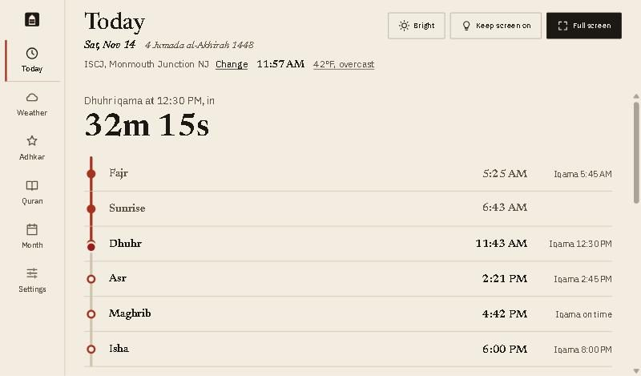
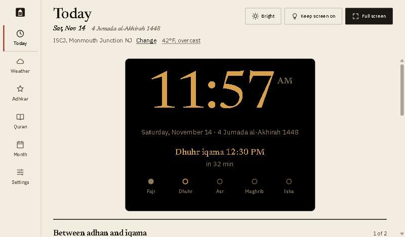
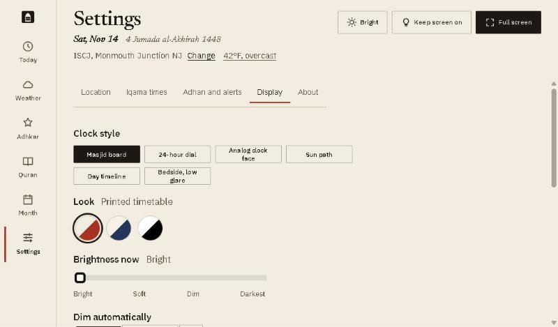
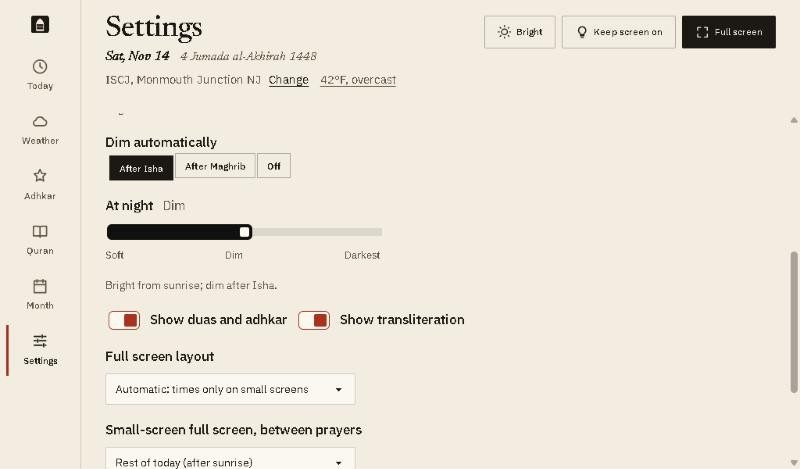

Chapter 6
Display and night mode
Choose how the clock looks, and how bright the screen is by day and at night. All of it is under Settings › Display.
Clock styles
Six ways to show the time and today’s prayers. Pick one under Clock style.











Look and brightness


- Clock style: the six styles above.
- Look: Printed timetable (paper and ink), Handwritten (blue pen on a ruled sheet), or High contrast (black and white, easiest to read from afar).
- Brightness now: Bright, Soft, Dim or Darkest. The Bright button at the top of every screen does the same.
Night, duas and full screen


- Dim automatically: After Isha, After Maghrib, or Off. The screen goes bright again at sunrise.
- At night: how dim it goes: Soft, Dim or Darkest.
- Show duas and adhkar and Show transliteration turn the dua on the Today screen, and its English letters, on or off.
- Full screen layout: Times only, Clock, prayers and dua, or Automatic, which shows times only on small screens.

Good to know
- Arabic text size (Small, Medium, Large) is at the bottom of the page, with Keep screen on.
- A web page cannot turn down the tablet’s backlight. Dim and Darkest darken the page itself. For a darker room, lower the tablet’s own brightness too.